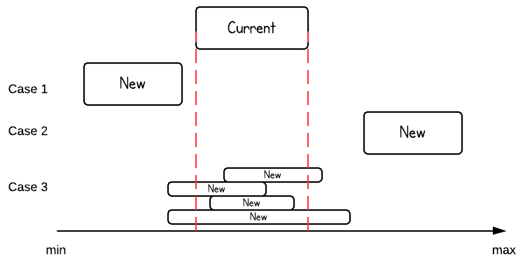

LeetCode Problem
57. Insert Interval
Link to LeetCode
You are given an array of non-overlapping intervals intervals where intervals[i] = [starti, endi] represent the start and the end of the ith interval and intervals is sorted in ascending order by starti. You are also given an interval newInterval = [start, end] that represents the start and end of another interval.
Insert newInterval into intervals such that intervals is still sorted in ascending order by starti and intervals still does not have any overlapping intervals (merge overlapping intervals if necessary).
Return intervals after the insertion.
Note that you don't need to modify intervals in-place. You can make a new array and return it.
Example 1:
Input: intervals = [[1,3],[6,9]], newInterval = [2,5]
Output: [[1,5],[6,9]]
Example 2:
Input: intervals = [[1,2],[3,5],[6,7],[8,10],[12,16]], newInterval = [4,8]
Output: [[1,2],[3,10],[12,16]]
Explanation: Because the new interval [4,8] overlaps with [3,5],[6,7],[8,10].
Analysis
When iterating over the list, there are three cases for the current range.

solution -2
If the intervals list is an ArrayList, we can use binary search to make the best search time complexity O(log(n)). However, the worst time is bounded by shifting the array list if a new range needs to be inserted. So time complexity is still O(n).
/**
* Definition for an interval.
* public class Interval {
* int start;
* int end;
* Interval() { start = 0; end = 0; }
* Interval(int s, int e) { start = s; end = e; }
* }
*/
public class Solution {
public ArrayList insert(ArrayList intervals, Interval newInterval) {
ArrayList result = new ArrayList();
for(Interval interval: intervals){
if(interval.end < newInterval.start){
result.add(interval);
}else if(interval.start > newInterval.end){
result.add(newInterval);
newInterval = interval;
}else if(interval.end >= newInterval.start || interval.start <= newInterval.end){
newInterval = new Interval(Math.min(interval.start, newInterval.start), Math.max(newInterval.end, interval.end));
}
}
result.add(newInterval);
return result;
}
}
public List insert(List intervals, Interval newInterval) {
List result = new ArrayList<>();
if (intervals.size() == 0) {
result.add(newInterval);
return result;
}
int p = helper(intervals, newInterval);
result.addAll(intervals.subList(0, p));
for (int i = p; i < intervals.size(); i++) {
Interval interval = intervals.get(i);
if (interval.end < newInterval.start) {
result.add(interval);
} else if (interval.start > newInterval.end) {
result.add(newInterval);
newInterval = interval;
} else if (interval.end >= newInterval.start || interval.start <= newInterval.end) {
newInterval = new Interval(Math.min(interval.start, newInterval.start), Math.max(newInterval.end, interval.end));
}
}
result.add(newInterval);
return result;
}
public int helper(List intervals, Interval newInterval) {
int low = 0;
int high = intervals.size() - 1;
while (low < high) {
int mid = low + (high - low) / 2;
if (newInterval.start <= intervals.get(mid).start) {
high = mid;
} else {
low = mid + 1;
}
}
return high == 0 ? 0 : high - 1;
}